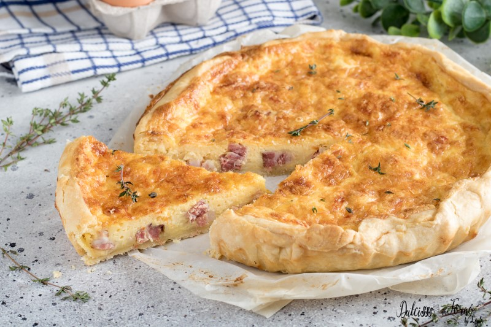

Ricette Tipiche della Francia
Quiche Lorraine
Ingredienti:
- 1 pasta brisée (frolla salata) già pronta o fatta in casa
- 200 g di pancetta affumicata tagliata a dadini
- 4 uova
- 150 g di formaggio gruyère grattugiato
- 250 ml di panna fresca
- 250 ml di latte
- Sale e pepe q.b.
- Noce moscata q.b.
Istruzioni:
- Preriscalda il forno a 180°C.
- Stendi la pasta brisée in una teglia da quiche, bucherella il fondo con una forchetta e fai cuocere in bianco per circa 10 minuti.
- In una padella antiaderente, fai dorare la pancetta affumicata fino a renderla croccante. Scolala su della carta assorbente per eliminare l'eccesso di grasso.
- In una ciotola, sbatti le uova con la panna fresca e il latte. Aggiungi metà del formaggio gruyère grattugiato e mescola bene. Condisci con sale, pepe e noce moscata a piacere.
- Distribuisci la pancetta dorata sulla base della quiche precotta e versa il composto di uova e formaggio sopra di essa. Spolvera con il rimanente formaggio gruyère grattugiato.
- Inforna la quiche e cuoci per circa 30-35 minuti, o fino a quando la superficie sarà dorata e il ripieno sarà solidificato.
- Togli la quiche dal forno e lasciala raffreddare leggermente prima di tagliarla a fette.
- Servi la Quiche Lorraine calda o a temperatura ambiente come antipasto, piatto principale o da accompagnare con una fresca insalata verde.

Torna alla pagina principale